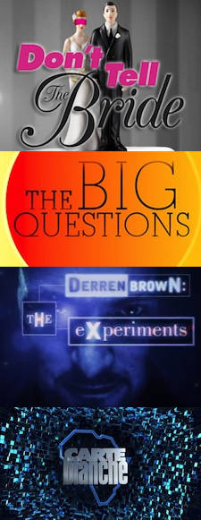

I've worked as a Runner in many capacities; ringing up audiences and helping out with research in the office, looking after contributors on locations, or assisting the crew by booming or managing tapes.
This has given me an inside track on many different formats, but also the habit of never making assumptions or being afraid to ask questions.
To my mind, the ideal runner is flexible, and takes their cue from how the team works, then deriving from that how they can best support them.
I have experience of live tv, mainly from working in shopping television, and on Mentorn's the big questions, a studio debate show. However it is often before going live, or shooting to edit later, where the runner is relied upon more.
I’m based in the North West, but it’s also easy for me to work in London. I have a full, clean UK driving license and my car’s insured for business use.
I can shoot great gv's and extra actuality, as well as zipping around doing whatever's needed.
If you want to get in touch, contacts are at the bottom left of the page.